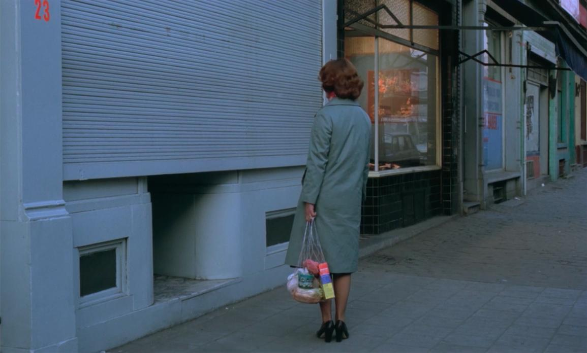
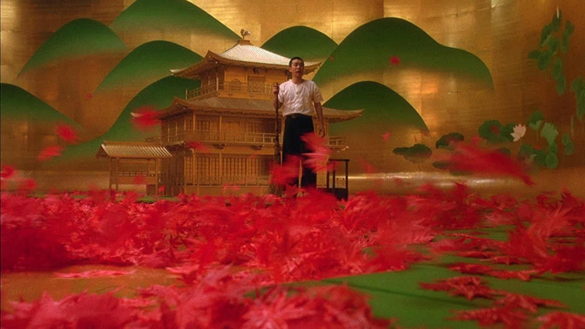
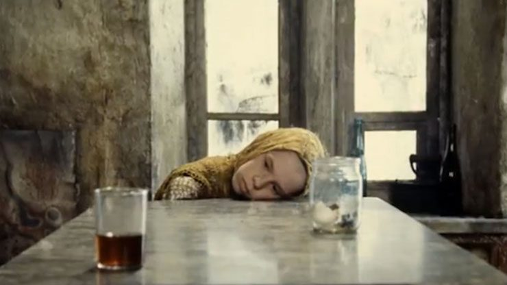

Whether it’s a last-minute flash sale on criterion.com or one of those cherished Barnes & Noble bi-annual blowouts, you can
level up your film IQ by constructing a library of the world’s grandest cinematic achievements without breaking the bank—which you’ll undoubtedly want to! Be ready for the next sale by loading up your wishlists
ahead of time with a few of these essential masterworks:

Tokyo Story
Yasujirõ Ozu | 1953 | 136 minutes
“A profoundly stirring evocation of elemental humanity and universal heartbreak, Tokyo Story is the crowning achievement of the unparalleled Yasujiro Ozu. The film, which follows an aging couple’s journey to visit their grown
children in bustling postwar Tokyo, surveys the rich and complex world of family life with the director’s customary delicacy and incisive perspective on social mores. Featuring lovely performances from Ozu regulars Chishu Ryu
and Setsuko Hara, Tokyo Story plumbs and deepens the director’s recurring theme of generational conflict, creating what is without question one of cinema’s mightiest masterpieces.”
More details...

Ingmar Bergman’s Cinema
Ingmar Bergman | 1946–2003 | 4537 minutes
“Arranged as a film festival with opening and closing nights bookending double features and centerpieces, this selection spans six decades and thirty-nine films—including such celebrated classics as The Seventh Seal,
Persona, and Fanny and Alexander alongside previously unavailable works like Dreams, The Rite, and Brink of Life. Accompanied by a 248-page book with essays on each program, as well as by
more than thirty hours of supplemental features, Ingmar Bergman’s Cinema traces themes and images across Bergman’s career, blazing trails through the master’s unequaled body of work for longtime fans and newcomers
alike.”
More details...

Jeanne Dielman, 23, quai du Commerce, 1080 Bruxelles
Chantal Akerman | 1975 | 201 minutes
“A singular work in film history, Chantal Akerman’s Jeanne Dielman, 23, quai du Commerce, 1080 Bruxelles meticulously details, with a sense of impending doom, the daily routine of a middle-aged widow, whose chores
include making the beds, cooking dinner for her son, and turning the occasional trick. In its enormous spareness, Akerman’s film seems simple, but it encompasses an entire world. Whether seen as an exacting character study or
as one of cinema’s most hypnotic and complete depictions of space and time, Jeanne Dielman is an astonishing, compelling movie experiment, one that has been analyzed and argued over for decades.”
More details...

Do the Right Thing
Spike Lee | 1989 | 120 minutes
“Set on one block of Brooklyn’s Bed–Stuy Do or Die neighborhood, at the height of summer, this 1989 masterpiece by Spike Lee confirmed him as a writer and filmmaker of peerless vision and passionate social engagement.
Over the course of a single day, the easygoing interactions of a cast of unforgettable characters—Da Mayor, Mother Sister, Mister Señor Love Daddy, Tina, Sweet Dick Willie, Buggin Out, Radio Raheem, Sal, Pino, Vito, and
Lee’s Mookie among them—give way to heated confrontations as tensions rise along racial fault lines, ultimately exploding into violence. Punctuated by the anthemic refrain of Public Enemy’s ‘Fight the Power,’
Do the Right Thing is a landmark in American cinema, as politically and emotionally charged and as relevant now as when it first hit the big screen.”
More details...

Mishima: A Life in Four Chapters
Paul Schrader | 1985 | 120 minutes
“Paul Schrader’s visually stunning, collagelike portrait of the acclaimed Japanese author and playwright Yukio Mishima (played by Ken Ogata) investigates the inner turmoil and contradictions of a man who attempted the
impossible task of finding harmony among self, art, and society. Taking place on the last day of Mishima’s life, when he famously committed public seppuku, the film is punctuated by extended flashbacks to the writer’s past
as well as gloriously stylized evocations of his fictional works. With its rich cinematography by John Bailey, exquisite sets and costumes by Eiko Ishioka, and unforgettable, highly influential score by Philip Glass, Mishima:
A Life in Four Chapters
is a tribute to its subject and a bold, investigative work of art in its own right.”
More details...

Stalker
Andrei Tarkovsky| 1979 | 161 minutes
“Andrei Tarkovsky’s final Soviet feature is a metaphysical journey through an enigmatic postapocalyptic landscape, and a rarefied cinematic experience like no other. A hired guide—the Stalker—leads a writer and
a professor into the heart of the Zone, the restricted site of a long-ago disaster, where the three men eventually zero in on the Room, a place rumored to fulfill one’s most deeply held desires. Adapting a science–fiction
novel by Arkady and Boris Strugatsky, Tarkovsky created an immersive world with a wealth of material detail and a sense of organic atmosphere. A religious allegory, a reflection of contemporaneous political anxieties, a meditation
on film itself—Stalker envelops the viewer by opening up a multitude of possible meanings.”
More details...